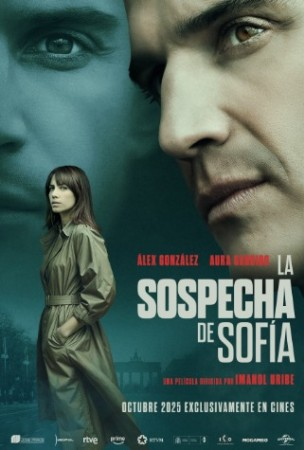

La vida de Sofia i Daniel s'anticipa prometedora i feliç fins que Daniel rep una enigmàtica invitació per a anar a conèixer a la seva mare biològica a un Berlín de l'Est sumit en plena Guerra Freda. Sense ell saber-ho, acceptar aquesta invitació es convertirà en el major error de la seva vida ja que es convertirà en la peça essencial del pla secret del KGB per a establir el seu centre operatiu a l'Espanya franquista i en el qual el seu germà bessó, Klaus, jugarà un paper clau, usurpant-li la identitat, la família i la vida sencera. Des d'aquest moment, Sofía viurà en una contínua sospita.